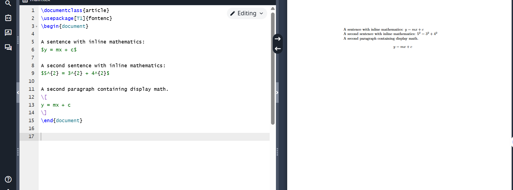
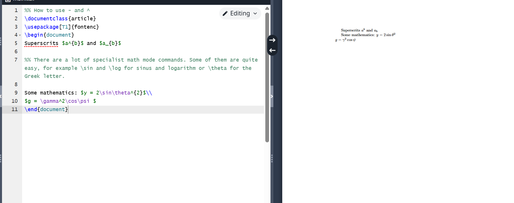
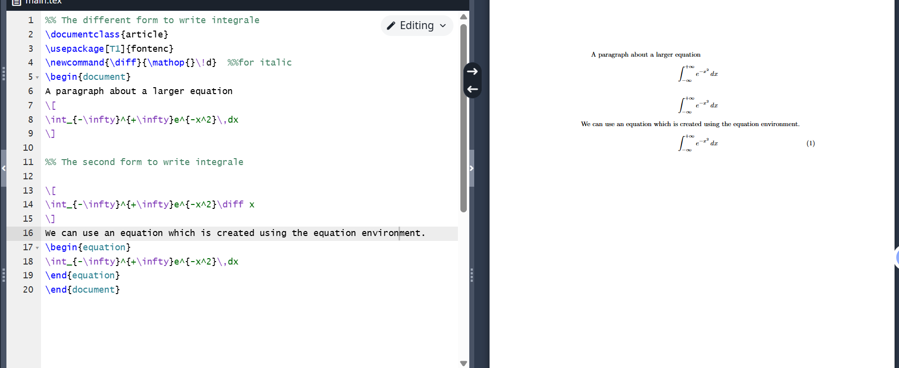
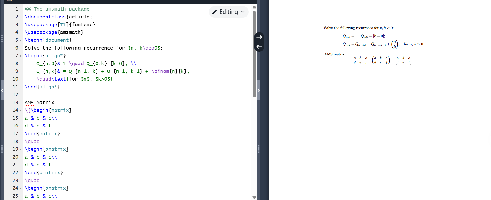
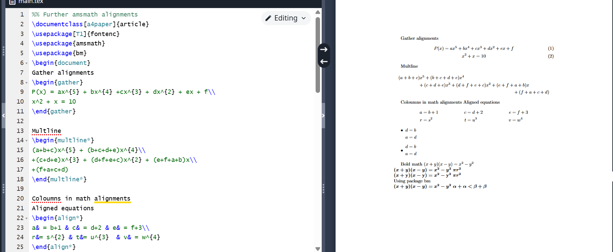
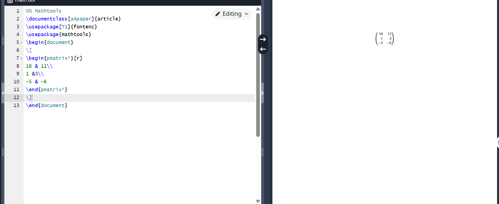
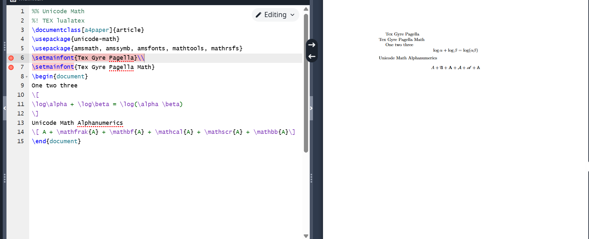

Laboratory Work 3: LaTeX
Study
Introduction
This laboratory work focuses on learning LaTeX for scientific
writing.
Learning LaTeX

LaTeX interface
Basic Commands

LaTeX commands
Mathematical Expressions

Mathematical formulas
Advanced Features

Advanced LaTeX
Packages and Extensions

LaTeX packages
Customization

LaTeX customization
Additional Features

LaTeX features
Conclusions
- Got acquainted with LaTeX language
- Continued studying its capabilities
- Learned to write mathematical formulas
- Explored various LaTeX packages